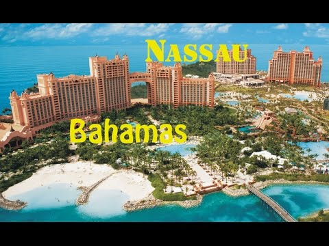

Нассау
Столиця, Багамські Острови
- На́ссау — столиця та найбільше місто Співдружності Багамських
островів. Населення міста — 260 тис., близько 80 % населення
країни. Вікіпедія - Площа: 207 км²
- Населення : 244 400 (2009) Організяція Об'єднаних націй
- Код регіону : 242
- Готелі
: Номер у 3-зірковому готелі в середньому коштує 187 BSD,
у 5-зірковому – 880 BSD.Переглянути готелі -
Колежді
та університети :
Universuty
of the Bahamas,
The
Assemblies
of God Bible College, Nassau, NP, Bahamas
https://ru.wikipedia.org/wiki/Нассау_(Багамские_Острова)
На́ссау (англ. Nassau; ['nasɔː]) — столица Багамских Островов, торговый и культурный центр,
а
также самый крупный город страны. Население ...
https://ru.wikipedia.org/wiki/Нассау
Нассау (нем. Nassau):. Нассау (замок) — средневековый замок в Германии в земле Рейнланд-
Пфальц.
Нассау — город в Германии, получивший ...

{kind=link}
https://en.wikipedia.org/wiki/Nassau,_Bahamas Перевести эту страницу
With the lure of a big city and the ease of tropical utopia, Nassau & Paradise Island are
considered by
many as, well, paradise. Nassau, the capital of The ...